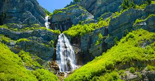

Best Hiking Spots
About William
Play a Hiking Game!
Near Provo
- Up Provo Canyon - easy hike
- About 3.5 miles - round trip
- Up Provo Canyon - hard hike
- about 7.5 miles - round trip

Away from Provo
- Ashley National Forest - hard hike
- 25-30 miles long - 13,528 ft in elevation
- Corona Arch, Moab - easy hike
- 3 miles - round trip
Go to top